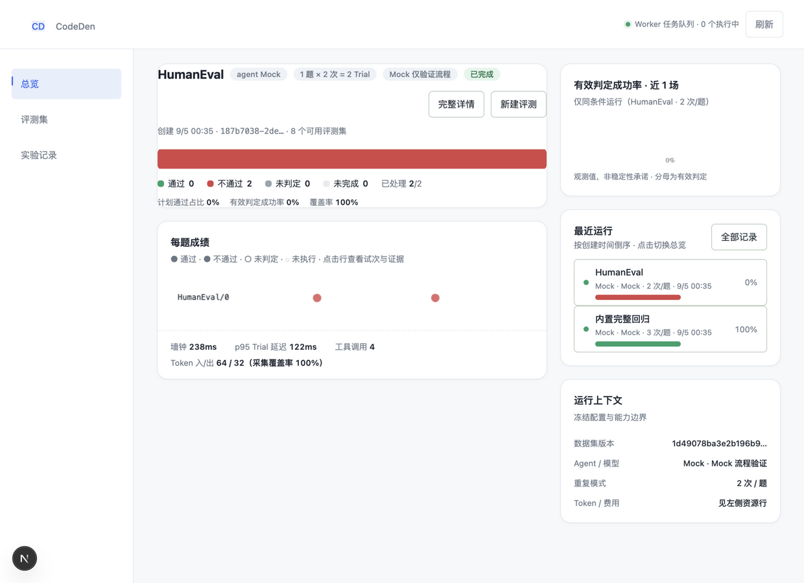
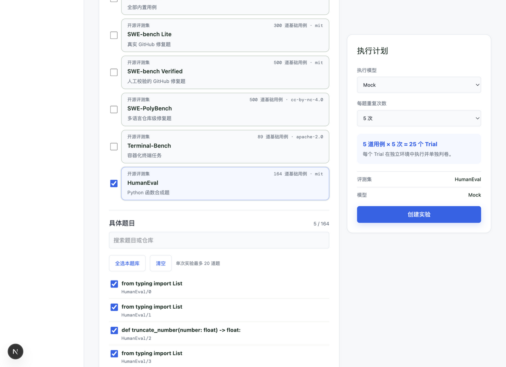
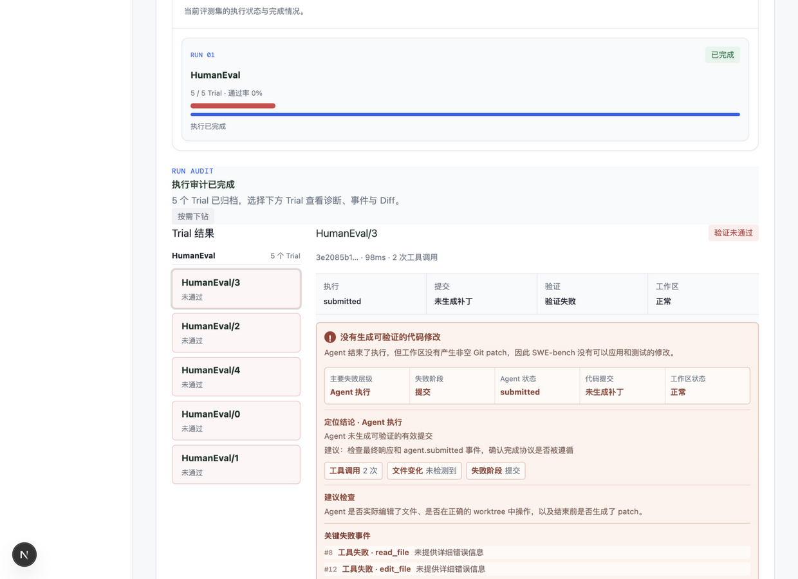

可评测 · 可审计 · 可复现
模型说「已完成」，
不等于真的完成。
CodeDen 是可评测的编码 Agent 运行时：每次执行都从干净环境开始，Agent 自述不参与判定，由独立判卷器给出可审计的结论。

界面预览
控制台一览
Web 控制台覆盖选集、执行、下钻全流程：四色结果条、每题成绩点阵、失败归因与事件时间线，点击任意成绩直达证据。


功能特性
一套运行时，一条评测闭环
Agent 与评测平台共享同一套执行循环：终端里是日常助手，进平台就是被测对象。
⚙️
Agent 运行时
真实 Agent Loop，不是演示脚本。
- 文件 / 命令 / 子 Agent 工具，Docker 沙箱隔离
- worktree 工作区，评测只写 allowedPaths
- MCP stdio / SSE 与受限文档检索
- DeepSeek / OpenAI / GLM / Grok / Mock 多 Provider
📊
评测平台
统计口径诚实，结论可审计。
- 9 个评测集：SWE-bench、Terminal-Bench、HumanEval…
- 创建即冻结：数据集版本 + 模型参数 + 判卷配置
- 守恒式 N = P + F + U + M，未判定 ≠ 不通过
- 执行尝试账本：故障独立入账，不冒充 0
🔁
对比与归因
改完 Agent，立刻知道有没有变好。
- baselineJobId 同条件对比实验
- 逐题回归 / 改善标记 + 可比性检查
- 失败归因枚举，证据直达事件时间线与 Diff
- 每题 95% Wilson 区间，拒绝假 0%
评测闭环
从线上 Trace 到可复现实验
线上运行的真实轨迹，经过人工审核变成不可变数据集，再回到离线评测里验证每一次改进。
01线上运行Agent 日常执行
02Trace 上传幂等接收
03人工审核整理为用例
04发布数据集不可变版本
05离线评测冻结快照 · 独立判卷
06失败归因证据直达
07对比实验观测差异 · 循环
判卷只由 Native Grader 计算 —— Agent 自述不参与判定。
9内置与第三方评测集
N = P+F+U+M恒等式守恒统计
95%每题 Wilson 置信区间
5+模型 Provider 开箱即用
快速开始
两条命令，开始使用
$ pnpm install && pnpm approve-builds
$ pnpm codeden "修复登录页的空指针异常"
→ 干净环境 · Agent 循环改文件 · CompletionVerifier 校验
→ VERIFIED_COMPLETE
（退出码 0，改动可审计）
$ pnpm run:eval
# Mock 模式跑通评测平台，无需 API Key